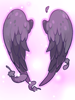
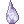

Fallen Angel Wings and Archangel Wings

 Archangel Wings [1] and
Archangel Wings [1] and  Fallen Angel Wings [1] are garments which can be enchanted with powerful enchants.
Fallen Angel Wings [1] are garments which can be enchanted with powerful enchants.
They can be crafted and enchanted at The Wyvern by Dante, at the stern of the Airship.
Fallen Angel Wings
| Fallen Angel Wings
| ||
|---|---|---|
|  | Large black wings from an archangel that was banished from heaven. All stats + 1 Class: Garment |
10  Shattered Violet Gem Shattered Violet Gem
|


Enchantment
Fallen Angel Wings [1] can be enchanted up to 3 times, with a variety of enchantments.
Each enchantment attempt will cost 8 Shattered Violet Gems, 8 Shattered Rose Gems and 100k Zeny.
You can also reset all enchantments, at the cost of 15 Shattered Violet Gems, 15 Shattered Rose Gems and 500k Zeny.
There is no chance to break the wings while enchanting or resetting your enchants.
The number of times a Fallen Angel Wing can be enchanted depends on its refine rate.
| Refine Rate | # of Enchants |
|---|---|
| +6 or lower | 1 |
| +7 or +8 | 2 |
| +9 or higher | 3 |
Enchant Options
The player can choose the category for each enchant they want.
Enchants on the 3rd slot can also contain the same levels as the first and second slot. It only offers an additional possible enchant.
| Enchant Type | Enchants | 3rd Slot (Refine +9) |
|---|---|---|
| Fighting |  Fighting Spirit 3, 4 or 5 Fighting Spirit 3, 4 or 5 |
 Fighting Spirit 6 Fighting Spirit 6
|
| Magic |  Spell 4, 5 or 6 Spell 4, 5 or 6 |
 Spell 7 Spell 7
|
| Archer |  Expert Archer 1, 2 or 3 Expert Archer 1, 2 or 3 |
 Expert Archer 4 Expert Archer 4
|
| Critical |  Fatal 1, 2 or 3 Fatal 1, 2 or 3 |
 Fatal 4 Fatal 4
|
| Max HP |  MaxHP +1%, +2% or +3% MaxHP +1%, +2% or +3% |
 Max HP +4% Max HP +4%
|
| Max SP | SP +25, +50 or +75 |  +100 SP +100 SP
|
| ASPD |  ASPD 1, 2 or 3 ASPD 1, 2 or 3 |
 ASPD + 1 ASPD + 1
|
| STR |  STR +3, +4 or +5 STR +3, +4 or +5 |
 Special STR Special STR
|
| AGI |  AGI +3, +4 or +5 AGI +3, +4 or +5 |
 Special AGI Special AGI
|
| VIT |  VIT +3, +4 or +5 VIT +3, +4 or +5 |
Special VIT |
| INT |  INT +3, +4 or +5 INT +3, +4 or +5 |
 Special INT Special INT
|
| DEX |  DEX +3, +4 or +5 DEX +3, +4 or +5 |
 Special DEX Special DEX
|
| LUK |  LUK +3, +4 or +5 LUK +3, +4 or +5 |
 Special LUK Special LUK
|
Archangel Wings
 Archangel Wings Archangel Wings
| ||
|---|---|---|
A pair of white wings from an archangel. Class: Garment |
|


Enchantment
Archangel Wings [1] can be enchanted a single time, with a variety of enchantments.
Each enchantment attempt will cost 1 Shattered Violet Gem, 1 Shattered Rose Gem and 10k Zeny.
You can also reset all enchantments, at the cost of 1 Shattered Violet Gem, 1 Shattered Rose Gem and 100k Zeny.
There is no chance to break the wings while enchanting or resetting your enchants.
High Rank Enchants
| Enchant Type | Enchant Description |
|---|---|
 Cranial 1 Cranial 1
|
Increases Tolerance to Demihuman and other Players by 5% |
| Immune 1 | Increases tolerance to Neutral Property monsters by 5% |
 Heal Amount 5 Heal Amount 5
|
Increases heal efficiency by 20%, Increases SP consumption by 15% |
Rare Enchants
| Special Enchants | |
|---|---|
| Special STR
| |
| Special AGI
| |
| Special VIT | |
| Special INT
| |
| Special DEX
| |
| Special LUK
| |
Uncommon Enchants
| Enchant Type | Enchant Description |
|---|---|
 Expert Archer 2 Expert Archer 2
|
Ranged Damage +4% |
 Expert Archer 3 Expert Archer 3
|
Ranged Damage +6% |
 Fighting Spirit 2 Fighting Spirit 2
|
ATK +9, Hit +3 |
| Fighting Spirit 3
|
ATK +12, Hit +4 |
|  Heal Amount 3 | Increases healing power by 6%, increases SP consumption by 5% |
 Heal Amount 4 Heal Amount 4
|
Increases healing power by 12%, increases SP consumption by 10% |
 MATK +1% MATK +1%
|
MATK +1%, reduces Fixed Cast Time of skills by 1% |
 MATK +2% MATK +2%
|
MATK +2%, reduces Fixed Cast Time of skills by 1% |
 Sharp 2 Sharp 2
|
Crit +9, Hit +3 |
 Sharp 3 Sharp 3
|
Crit +12, Hit +4 |
 Spell 2 Spell 2
|
MATK +9, reduces Variable Cast Time of skills by 6% |
 Spell 3 Spell 3
|
MATK +12, reduces Variable Cast Time of skills by 8% |
Common Enchants
| Common Enchants |
|---|
 Str + 2 Str + 2
|
 Agi + 2 Agi + 2
|
 Vit + 2 Vit + 2
|
 Int + 2 Int + 2
|
 Dex + 2 Dex + 2
|
 Luk + 2 Luk + 2
|
Recolors
A pair of Archangel Wings [1] can also receive recolors from May, located next to Dante.
Each color unlock costs 1000 Shattered Violet Gem and 1000 Shattered Rose Gem. Once you have a color unlocked, you can swap any Archangel Wings to that color, free of charge.
Here's all available options:
- Green Archangel Wings
- Brown Archangel Wings
- Black Archangel Wings
- Red Archangel Wings
- Blue Archangel Wings
- Gold Archangel Wings
- Happiness Wings (Free of charge, after you've unlocked all previous colors)
| Monster Hunting | ||
|---|---|---|
| Low Rank Hunts • High Rank Hunts | ||
| Hunting Mechanics | Rage • Hate • Skills • Alterations | |
| Player Roles | Tank • Damage • Healer • Utility | |
| Monsters |
1-Star Hunts | Garanth • Nyia |
| 2-Star Hunts | Garronath • Nysori | |
| 3-Star Hunts | Angnar • Zaedronath | |
| Unreleased | Sybaris • Vakaris • Hrungnir • Anko & Mako | |
| Regular Monsters | Ambient Monsters | |
| Rewards | Shadow Gear (Low Rank, High Rank (1/2-star), Angnar, Zaedronath) • Shadow Gear Refinement
Archangel Wings • Fallen Angel Wings • Ancient Hero • Temporal Armors • Violet Halo • Magical Booster • Bio Weapon Helms | |
| Gathering & Combinations | Mining • Fishing • Foraging • Combinations | |
| Lore | The Savage Coast • The Wyvern • Astrid • Seruel • Delphina • Sain • Will • Reidin Kurs | |